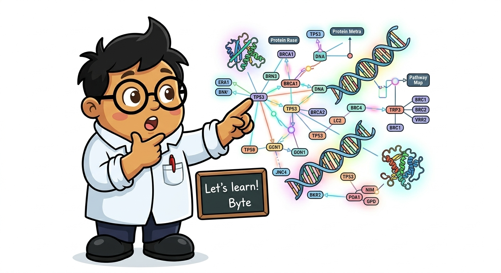
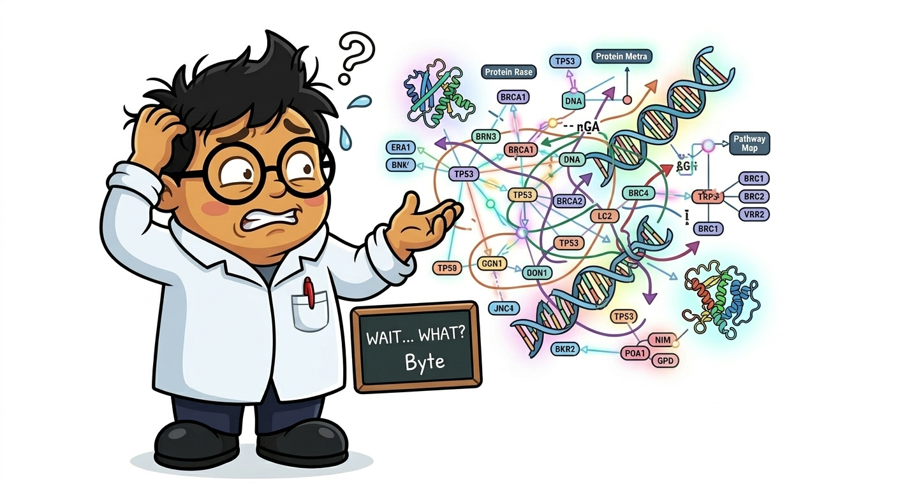

Lineage Diversification Rates · State-Dependent Diversification · Mass Extinction Detection · Adaptive Radiation Analysis

library(ape)
library(phytools)
library(laser)
tree <- read.tree("dated_tree.nwk")
# LTT plot — lineage accumulation through time
ltt.plot(tree, log="y", main="Lineage Through Time")
# Straight line (log scale) = constant rate
# Upward curve = rate increase
# Plateau = extinction or slowdown
# Gamma statistic (Pybus & Harvey 2000)
gamma_val <- gammaStat(tree)
# gamma < 0: nodes concentrated early (slowdown / early burst)
# gamma > 0: nodes concentrated recently (recent radiation)
# gamma = 0: constant-rate birth-death
# Test significance: compare to null (pure birth)
# MCCR test: accounts for incomplete taxon sampling
mccr_result <- mccrTest(tree, n_missing=20, nsim=1000)
# n_missing = number of known species NOT in the tree
library(RPANDA)
tree <- read.tree("dated_tree.nwk")
# Fit birth-death models with time-varying rates
# Constant rate
f1 <- fit_bd(tree, tot_time=max(node.depth.edgelength(tree)),
f.lamb=function(t,y){y[1]},
f.mu=function(t,y){y[1]*0.5},
lamb_par=c(0.5), mu_par=c(0.25),
cst.lamb=TRUE, cst.mu=TRUE)
# Linear time-dependent speciation
f2 <- fit_bd(tree, tot_time=max(node.depth.edgelength(tree)),
f.lamb=function(t,y){y[1]+y[2]*t},
f.mu=function(t,y){y[1]},
lamb_par=c(0.5, 0.01), mu_par=c(0.1),
cst.lamb=FALSE, cst.mu=TRUE)
# Exponential time-dependent speciation
f3 <- fit_bd(tree, tot_time=max(node.depth.edgelength(tree)),
f.lamb=function(t,y){y[1]*exp(y[2]*t)},
f.mu=function(t,y){y[1]},
lamb_par=c(0.5, -0.01), mu_par=c(0.1),
cst.lamb=FALSE, cst.mu=TRUE)
# Compare models with AICc
aics <- c(constant=f1$aicc, linear=f2$aicc, exponential=f3$aicc)
print(aics)
library(BAMMtools) # BAMM: Bayesian Analysis of Macroevolutionary Mixtures # NOTE: BAMM has been criticized (Moore et al. 2016) for: # - Prior sensitivity (results depend heavily on prior on rate shifts) # - Potential for spurious rate shifts # USE WITH CAUTION — always compare with RPANDA/ClaDS # 1. Generate priors (sets expected number of shifts) setBAMMpriors(tree, outfile="myPriors.txt") # 2. Run BAMM (C++ program, not R) # bamm -c control_diversification.txt # 3. Analyze in R ed <- getEventData(tree, eventdata="event_data.txt", burnin=0.1) # Rate-through-time plot plotRateThroughTime(ed, ratetype="speciation", avgOver=500) # Best shift configuration best <- getBestShiftConfiguration(ed, expectedNumberOfShifts=1) plot.bammdata(best, lwd=2, legend=TRUE) addBAMMshifts(best, cex=2) # Bayes factors for number of shifts bfmat <- computeBayesFactors(ed, expectedNumberOfShifts=1, burnin=0.1) print(bfmat) # ClaDS: alternative to BAMM (no controversy issues) # Install: https://github.com/OdileMalique/ClaDS # library(ClaDS) # result <- fit_ClaDS(tree, sample_fraction=0.8) # plot_ClaDS(result, tree)
Moore et al. (2016) showed BAMM can be sensitive to prior choice and produce false rate shifts. Best practice: (1) Always run RPANDA or ClaDS as a cross-check, (2) Test sensitivity to priors by varying expectedNumberOfShifts, (3) Report results from multiple methods, (4) Consider TESS as an alternative Bayesian framework.
Do traits drive diversification? SSE (State-Speciation-Extinction) models test whether lineages with different character states diversify at different rates.
| Model | Trait Type | What It Tests | Package |
|---|---|---|---|
| BiSSE | Binary (0/1) | Does state 0 vs 1 have different λ, μ? | diversitree, hisse |
| MuSSE | Multi-state | Diversification differences across >2 states | diversitree |
| HiSSE | Binary + hidden | Accounts for unmeasured trait effects | hisse |
| SecSSE | Multi-state + hidden | Controls for trait-independent rate variation | secsse |
| FiSSE | Binary | Trait-independent test (no SSE assumptions) | FiSSE |
library(hisse)
tree <- read.tree("dated_tree.nwk")
states <- data.frame(taxon=tree$tip.label,
state=c(0,1,0,1,1,0,0,1,1,0))
# BiSSE-like model (no hidden states)
# WARNING: BiSSE alone has high false positive rate!
# The "unreplicated" problem: a single origin of a trait
# can appear to drive diversification by chance
# HiSSE: adds hidden states to account for unmeasured variables
# This controls for the false positive problem
# Model 1: CID-2 (character-independent, 2 rate classes)
# Null model: diversification varies but NOT due to the focal trait
turnover <- c(1, 1, 2, 2) # same turnover for 0A=1A, 0B=1B
eps <- c(1, 1, 1, 1) # same extinction fraction
trans.rate <- TransMatMakerHiSSE(hidden.traits=1)
mod_CID2 <- hisse(tree, states, f=c(0.5, 0.5), # sampling fraction
turnover=turnover, eps=eps,
hidden.states=TRUE,
trans.rate=trans.rate)
# Model 2: HiSSE (trait-dependent with hidden states)
turnover_hisse <- c(1, 2, 3, 4) # all different
mod_HiSSE <- hisse(tree, states, f=c(0.5, 0.5),
turnover=turnover_hisse, eps=eps,
hidden.states=TRUE,
trans.rate=trans.rate)
# Compare with AIC
print(c(CID2=mod_CID2$AICc, HiSSE=mod_HiSSE$AICc))
# If HiSSE is better than CID-2, trait affects diversification
# If CID-2 is better, rate variation exists but is NOT trait-dependent
# Reconstruct marginal ancestral states
margin_rec <- MarginReconHiSSE(tree, states, f=c(0.5,0.5),
pars=mod_HiSSE$solution,
hidden.states=TRUE,
AIC=mod_HiSSE$AICc)
plot.hisse.states(margin_rec)

"Hidden states Help Honesty" — HiSSE over BiSSE
Never run BiSSE alone. Always include HiSSE with CID-2 null models to control for rate variation unrelated to your focal trait. The hidden states absorb background rate heterogeneity that BiSSE falsely attributes to the trait.
library(diversitree)
tree <- read.tree("dated_tree.nwk")
trait <- setNames(rnorm(length(tree$tip.label), mean=10, sd=3),
tree$tip.label)
# QuaSSE: quantitative-trait state speciation-extinction
# Tests if speciation/extinction rate depends on a continuous trait
# Very computationally expensive for large trees
lik <- make.quasse(tree, trait, states.sd=0.5,
lambda=function(x) sigmoid.x(x, 0.1, 0.5, 10, 5),
mu=function(x) constant.x(x, 0.03))
# ES-sim: simpler, simulation-based test
# Faster and more robust than QuaSSE for many datasets
library(phytools)
# Tip-level speciation rates (DR statistic)
DR <- 1/setNames(sapply(1:length(tree$tip.label), function(i) {
node <- i
edges <- c()
while(node != length(tree$tip.label)+1) {
parent <- tree$edge[tree$edge[,2]==node, 1]
edges <- c(edges, tree$edge.length[tree$edge[,2]==node])
node <- parent
}
sum(edges * (1/2)^(0:(length(edges)-1)))
}), tree$tip.label)
# Correlate DR with trait
cor.test(DR, trait[names(DR)], method="spearman")
# Significant correlation → trait may drive diversification
library(TESS)
tree <- read.tree("dated_tree.nwk")
# CoMET: Compound Poisson Process on Mass Extinction Times
# Detects mass extinction events from molecular phylogenies
result <- tess.analysis(tree,
samplingProbability = 0.5, # fraction of extant species sampled
estimateNumberMassExtinctions = TRUE,
MAX_ITERATIONS = 100000,
BURNIN = 10000,
thinning = 100)
# Plot speciation/extinction rates through time
tess.plot.output(result, fig.types=c("speciation rates",
"extinction rates", "mass extinction times"))
# PyRate: Bayesian estimation from fossil occurrence data
# Python-based: estimates origination and extinction rates
# from first/last appearance data in the fossil record
# python PyRate.py -d fossil_occurrences.py -n 10000000
library(geiger)
library(phytools)
tree <- read.tree("dated_tree.nwk")
traits <- read.csv("morphological_traits.csv", row.names=1)
# Disparity-Through-Time (DTT) plot
dtt_result <- dtt(tree, traits, nsim=1000, plot=TRUE)
# If observed DTT falls BELOW the BM expectation envelope:
# → Subclade disparity is low → early divergence pattern → adaptive radiation
# If ABOVE: → late burst or convergence
# MDI (Morphological Disparity Index)
# Negative MDI → early burst consistent with adaptive radiation
# Positive MDI → late burst
# Early Burst model fit
fit_EB <- fitContinuous(tree, traits[,1], model="EB")
fit_BM <- fitContinuous(tree, traits[,1], model="BM")
print(c(EB_AICc=fit_EB$opt$aicc, BM_AICc=fit_BM$opt$aicc))
# EB better than BM → rate deceleration → consistent with niche filling
# Morphospace occupation through time
# PCA on morphological traits → plot PC1 vs PC2
# Color by clade age → visualize if early lineages occupy more morphospace
pca <- prcomp(traits, scale=TRUE)
plot(pca$x[,1], pca$x[,2], pch=19, col=rainbow(nrow(traits)),
xlab="PC1", ylab="PC2", main="Morphospace")
SSE models are notoriously difficult to optimize. Solutions: (1) Try multiple starting values, (2) Reduce model complexity (fewer free parameters), (3) Ensure sampling fractions are correctly specified, (4) For very large trees (>500 tips), use SecSSE which has better numerical properties.
This is the known BAMM sensitivity issue. Always: (1) Use setBAMMpriors() for default priors AND try 0.5× and 2× those values, (2) If results are qualitatively different, the data doesn't strongly support rate shifts, (3) Report all results transparently, (4) Use RPANDA as an independent cross-check.
Incomplete taxon sampling inflates the gamma statistic (pushes toward negative values). Always use the MCCR test with the correct number of missing taxa. If significance disappears after MCCR correction, the apparent slowdown may be a sampling artifact.
"BiSSE Lies, HiSSE Helps"
BiSSE has unacceptably high false positive rates for traits with few origins. HiSSE with CID-2 null model controls for background rate heterogeneity. Always use HiSSE, never BiSSE alone.
"γ < 0 = Early, γ > 0 = Recent"
Negative gamma = nodes concentrated early in the tree (diversification slowdown). Positive gamma = recent radiation. But beware: incomplete sampling fakes negative gamma — always use MCCR test.